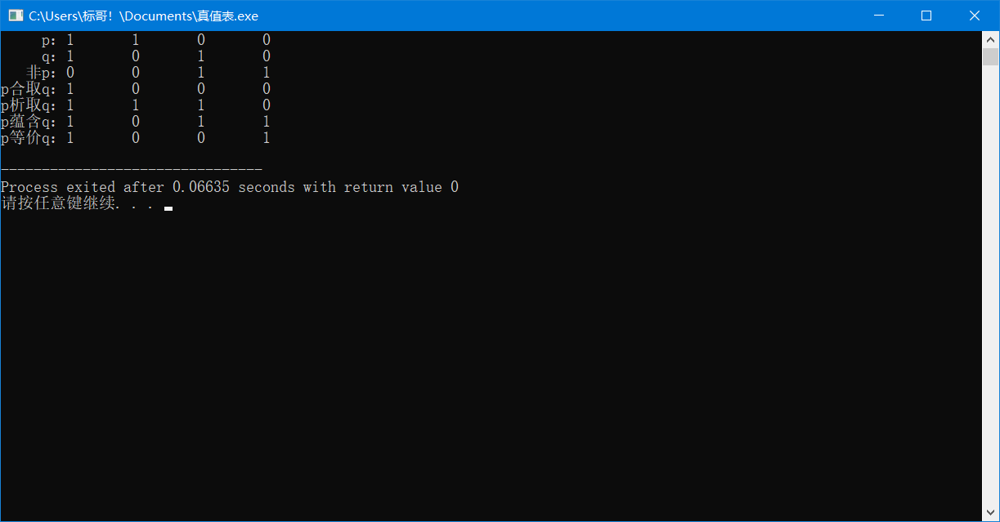
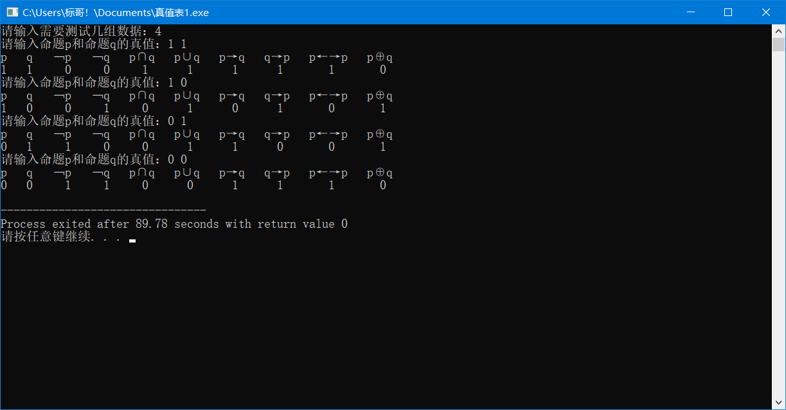

对给出的任意一个命题公式（不超过四个命题变元），使学生会用C语言的程序编程表示出来，并且能够计算它在各组真值指派下所应有的真值，画出其真值表。
#include<iostream> using namespace std; struct { int p[4] = {1,1,0,0}; int q[4] = {1,0,1,0}; }m; int main() { cout << " p："; for(int i = 0;i < 4;i++) cout << m.p[i] << " "; cout << endl; cout << " q："; for(int i = 0;i < 4;i++) cout << m.q[i] << " "; cout << endl; //非p cout << " 非p："; int copyp[4]; int k = 0; int feip[k]; for(int i = 0;i < 4;i++) copyp[i] = m.p[i]; for(int i = 0;i < 4;i++) { if(copyp[i] == 0) copyp[i] = 1; else copyp[i] = 0; } for(int i = 0;i < 4;i++) { feip[i] = copyp[i]; cout << copyp[i] << " "; } cout << endl; //p交q cout << "p合取q："; for(int i = 0;i < 4;i++) { if(m.p[i] == 0 || m.q[i] == 0) cout << 0 << " "; else cout << 1 << " "; } cout << endl; //p并ｑ cout << "p析取q："; for(int i = 0;i < 4;i++) { if(m.p[i] == 1 || m.q[i] == 1) cout << 1 << " "; else cout << 0 << " "; } cout << endl; //p蕴含ｑ cout << "p蕴含q："; for(int i = 0;i < 4;i++) { if(feip[i] == 1 || m.q[i] == 1) cout << 1 << " "; else cout << 0 << " "; } cout << endl; //p当且仅当q cout << "p等价q："; for(int i = 0;i < 4;i++) { if((m.p[i] == 1 && m.q[i] == 1) || (m.p[i] == 0 && m.q[i] == 0)) cout << 1 << " "; else cout << 0 << " "; } cout << endl; return 0; }
运行结果：
以下代码为可输入的代码，用布尔值实现
#include<iostream> using namespace std; void function(bool x,bool y) { bool m = x&y; bool n = x|y; bool a,b,c; if(x == 1 && y == 0) a = 0; else a = 1; if(y == 1 && x == 0) b = 0; else b = 1; if(x == y) c = 1; else c = 0; cout << "p q ﹁p ﹁q p∩q p∪q p→q q→p p←→p p⊕q" << endl; cout << x << " " << y << " " << !x << " " << !y << " "; cout << m << " " << n << " "; cout << a << " " << b << " " << c << " " << !c << endl; } int main() { bool p,q; int n; cout << "请输入需要测试几组数据："; cin >> n; while(n--) { cout << "请输入命题p和命题q的真值："; cin >> p >> q; function(p,q); } return 0; }
运行结果：